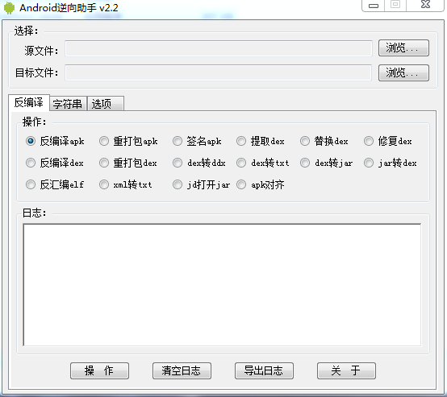
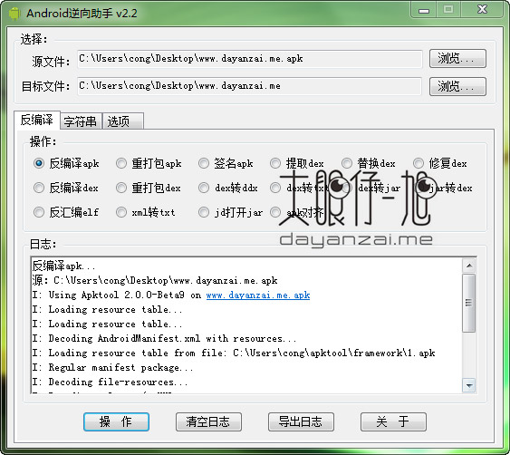
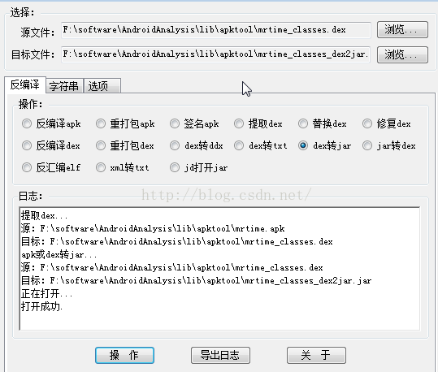

Android逆向助手
- 作者：大眼仔~旭
- 简介
- Android 逆向助手是一款针对安卓平台的强大逆向辅助软件，功能涵盖apk反编译打包签名；dex/jar互转替换提取修复；so反编译；xml、txt加密；字符串编码等。支持直接将文件拖放到源和目标文件这，不用每次都点浏览选择。
- 支持系统：
- WinXP、Win7，Win2003
- 注：其它系统没有测试
- 主要功能
- 反编译apk
- 重新打包成apk
- 对apk进行签名
- 反编译dex
- 重新打包成dex
- dex转jar
- dex转ddx
- dex导出成txt
- 反编译so
- jar转dex
- 提取dex
- 替换dex
- 修复dex
- 加密xml转txt
- 字符串unicode编解码
- 特别说明：
- 源文件处支持文件或文件夹拖放
- 必须安装
.Net Framework 2.0框架 - 部份功能依赖
java运行环境，因此必须安装java
- 下载地址
- 截图
- 
- 
- 